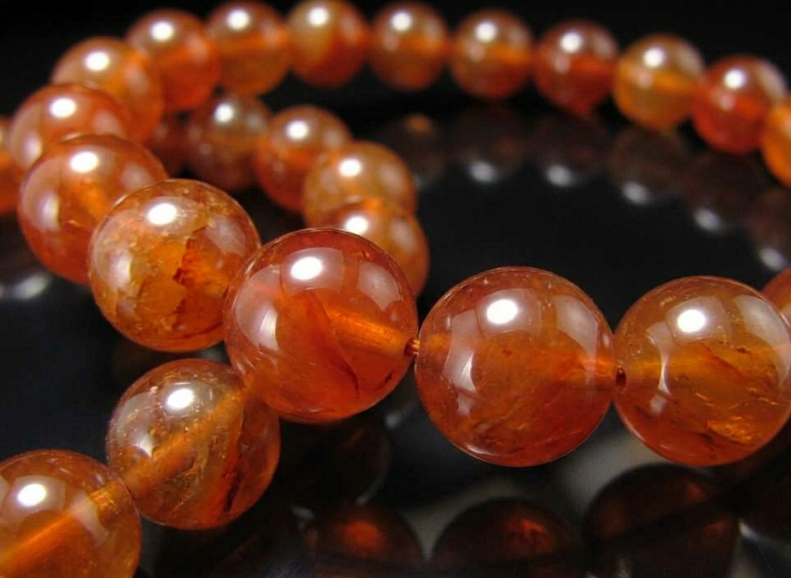

おりひめ様
詳細のご希望、ありがとうございます。
おりひめ様のために選んだ石について、
詳しくお伝えしますね。
おりひめ様の命の流れを視させていただき、
今のおりひめ様に最も必要な石を
3つ選びました。
おりひめ様は、
相手の気持ちもその場の空気も
全部大切にできる、
穏やかな優しさを生まれ持った方です。
周りから信頼される場所を
一つずつ築いてきた確かさと、
折れずにしなう芯の強さがあります。
でも、
あの方と会った帰り道、
言えなかった一言を
頭の中で何度も言い直しているような、
大切な想いほど胸の奥で守り抜いてしまう感覚が
繰り返されやすい流れがあります。
2026年12月、あの方のお誕生日の頃、
そして2027年の立春から3月の桜の頃。
この時期を経て、
胸にしまっていた想いを
小さな言葉にして出していける流れが
すでに動き始めています。
その流れを最大限に活かすために、
おりひめ様のエネルギーと
木花咲耶姫（このはなさくやひめ）が
深く共鳴する3つの石を選びました。

夕陽のような橙を宿した、
言葉を押し出す石です。
おりひめ様の、
想いを誰かに向けて燃やせる
温かいエネルギーと
最も深く共鳴します。
返事を打ちかけて画面を閉じそうになる夜、
「ひとこと、伝えます」と
言い出すその瞬間の勇気を
そっと支えてくれます。

木花咲耶姫と最も共鳴が強い石です。
深い海のような青を宿した、
言ったあとの心を鎮めてくれる石です。
おりひめ様の命の流れには、
相手を想う深い熱と、
言ってしまったら壊れてしまいそうで
胸にしまう慎重さが
同居しています。
ラリマーは、木花咲耶姫の守護を日常の中で
ずっとそばに置いておける石です。
一言を伝えたあとに、
「あれでよかったのかな」と揺れる気持ちを
静かに落ち着けてくれます。

若葉のような翡翠色を宿した、
見守りの石です。
おりひめ様を包んでいるオーラと
同じ色です。
言えなかった日の帰り道、
そのたびに自分を責めてしまうとき、
その自責のループを
静かにほどいてくれます。
胸にしまう優しさを止めるのではなく、
言えなかった日も
明日また言えるように、
やわらかな方向へ整えてくれる石です。
カーネリアン・ラリマー・ヒスイ。
この3つをおりひめ様専用に組み合わせて、
一つひとつ手作りで仕上げます。
木花咲耶姫への祈祷と
エネルギーチャージを込めて、
おりひめ様のもとへお届けします。
身につけていくうちに、
「ひとこと、伝えます」と
言える日が
少しずつ増えていきます。
あの方からの返事が少し遅い夜、
お誕生日の連絡を打ちかけて
そっと画面を閉じてしまう瞬間。
そういう揺らぎのとき、
石が、そのループをほどくのを
静かに支えてくれます。
日常の中で、守護がそばにある。
そして2027年の立春、
桜へ向かう道の入口に、
エネルギーを整えて
迎えやすくなります。
おりひめ様の場合、
2026年12月、あの方のお誕生日の頃に
最初の節目があり、
2027年の立春から3月の桜の頃にかけて、
お二人のご縁が
形になっていく流れがあります。
パワーストーンのエネルギーが
しっかりと馴染むまでには、
通常2〜3週間ほどかかります。
今から始めることで、
2027年の立春を迎える頃には
エネルギーが馴染んだ状態で
迎えやすくなります。
- ご注文から十日以内にお送りします
- 追跡番号付きで安心
- 専用の浄化・エネルギーチャージ済みでお届けします
今回ご購入いただいた方には：
- パワーストーンの取扱い・浄化方法のご案内
- ご購入から3ヶ月間、気になることがあればいつでもご相談いただけます
ご希望の方は、下のボタンよりお進みください。
ブレスレットを希望する
※ 別ウィンドウで購入ページが開きます
お値段のことは、
どうぞ無理のない範囲で
ご自分のペースで決めてくださいね。
ご不明な点があれば、
お気軽にお尋ねくださいね。
おりひめ様が、
「ひとこと、伝えます」と
ご自身に許したその瞬間から、
木花咲耶姫の守護が、
おりひめ様の優しさと一途さを
静かに支え始めます。
どうか、これからは
夕暮れの桜並木を
あの方と並んで歩く日々を
迎えてくださいね。